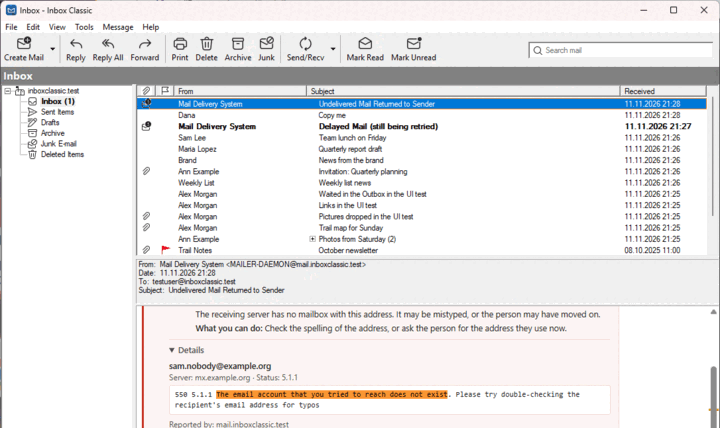

Nicht zugestellte Nachrichten
Wenn eine gesendete Nachricht zurückkommt oder sich verzögert, erklärt Inbox Classic, warum, und was Sie tun können.
Eine Zustellungsbenachrichtigung trägt in der Nachrichtenliste ein Zeichen für „nicht zugestellt“. Wenn Sie sie öffnen, sagt eine Karte darüber, ob Ihre Nachricht nicht zugestellt wurde oder sich nur verzögert.

Die Karte nennt jeden Empfänger mit dem Grund in verständlichen Worten und mit dem, was Sie tun können. Details zeigt den Wortlaut des empfangenden Servers.
- Nachricht anzeigen, die nicht zugestellt wurde wählt die Nachricht aus, die Sie gesendet haben.
- Bei einer Verzögerung wählt Verzögerte Nachricht anzeigen sie aus. Ihr Mailserver versucht es noch, Sie müssen sie also nicht erneut senden.
Einige häufige Gründe:
| Die Karte sagt | Was Sie tun können |
|---|---|
| Die Adresse existiert nicht | Prüfen Sie die Schreibweise der Adresse, oder fragen Sie die Person nach der Adresse, die sie jetzt verwendet. |
| Das Postfach ist voll | Senden Sie die Nachricht in ein paar Tagen erneut, oder erreichen Sie die Person auf anderem Weg. |
| Als Spam abgelehnt | Senden Sie die Nachricht erneut ohne das, was nach Spam aussieht, etwa viele Links oder eine große Anlage. |
| Ihr Mailserver steht auf einer Sperrliste | Leiten Sie die Benachrichtigung an Ihren E-Mail-Anbieter weiter. Das Problem liegt nicht an der Nachricht. |
| Zustellung vorübergehend zurückgestellt | Nichts. Meist wird die Nachricht innerhalb einer Stunde zugestellt. |
Um alle Zustellungsbenachrichtigungen zu finden, suchen Sie nach is:bounce. Der Grund wird auf Ihrem Computer ermittelt, und nichts wird irgendwohin gesendet.